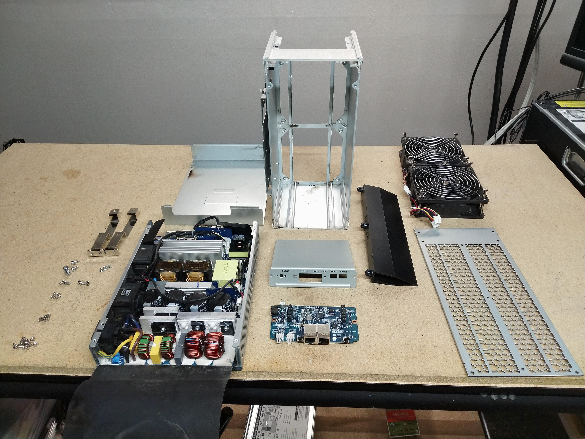
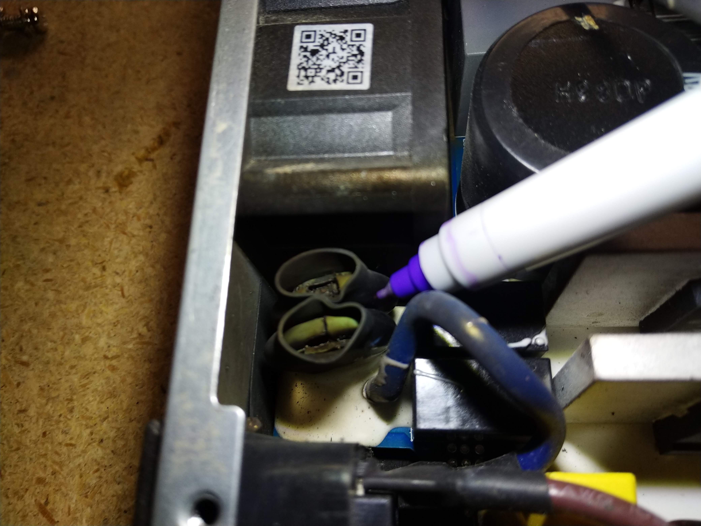
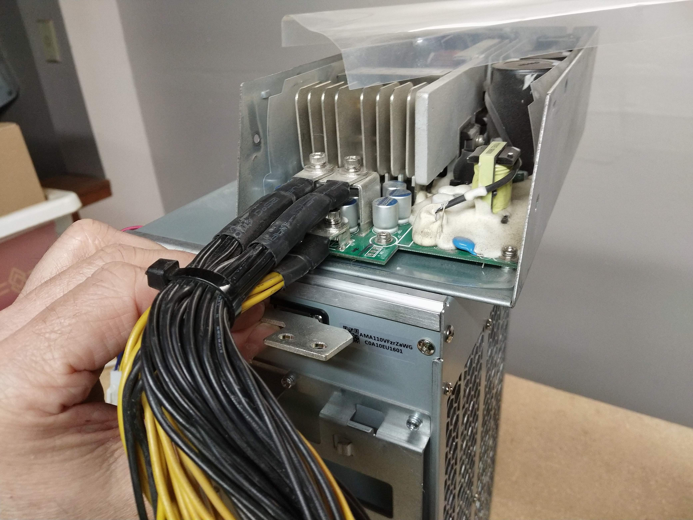
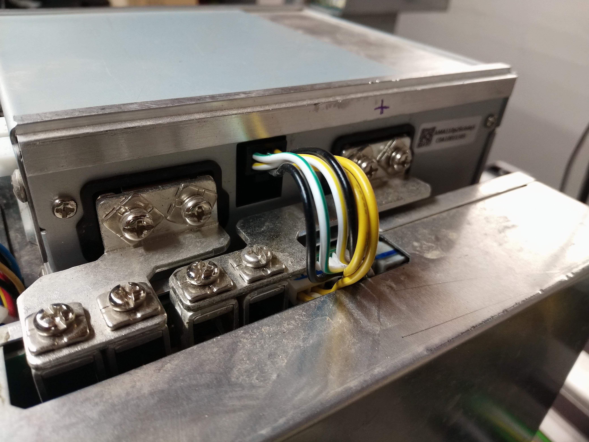
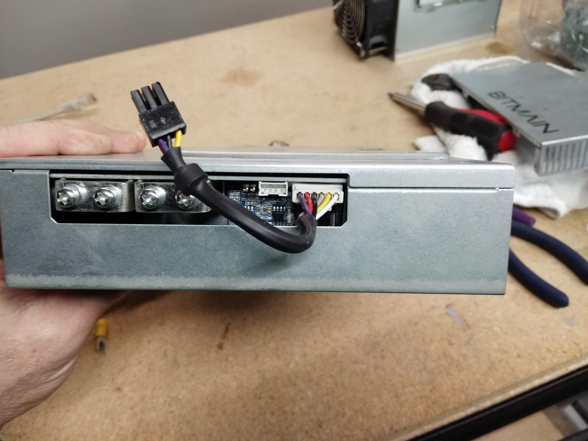

Disassebled Sparky
Find blown part
HACK-1 Sparky with S9 power supply
HACK-2 Sparky requires a different connector to logic board.
It even varies between the 2 units... multiple batches?
HACK-3 Sparky TBD
HACK-4 Sparky TBD
HACK-5 Sparky TBD